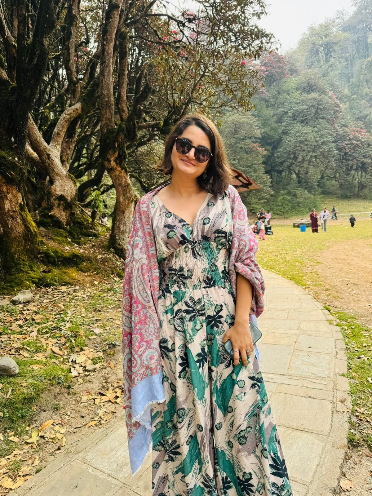

Associate Engagement Director
Alina
Ojha
Busara Center for Behavioral Economics · Nairobi, Kenya
"Bridging behavioral science and development finance to tackle gender, health, and climate challenges across the Global South."

Researcher.
Strategist.
Connector.
Alina Ojha works at the intersection of behavioral science, development economics, and social change — leading research programs and client partnerships at the Busara Center for Behavioral Economics in Nairobi, where she has grown from Research Associate to Senior Associate and now Engagement Director over five years.
Her path into this work began in Stockholm and Paris, where a dual Master's in Economics and International Development — and a Bertil Ohlin Scholarship for best thesis — sharpened her research instincts. Her graduate work took her to rural Nepal, where she used experimental methods to estimate the true prevalence of Chhaupadi, a practice that forces menstruating women into isolation. That early encounter with measurement in sensitive contexts shaped a career defined by methodological care and human stakes.
At Busara, Alina oversees mixed-method and experimental research across Kenya, Tanzania, Zambia, Nepal, Mexico, and beyond. She manages partnerships with foundations, NGOs, and development finance institutions — translating rigorous behavioral evidence into programs and investments that shift behavior at scale. Her work spans three interconnected themes: gender equity and the care economy, health systems and vaccine confidence, and behavioral approaches to climate and environment.
Three threads.
One through-line.
Gender & Care Economy
Alina studies the systems that make women's work invisible — and the interventions that can change that. From diagnosing social norms around unpaid care in Kenya, Zimbabwe, and the UK, to documenting how impact investing can reduce the domestic burden across three continents, her research moves from diagnosis to design: testing counter-narratives, modeling impact pathways, and informing how funders deploy capital.
- Social norms & counter-narratives on care work — Oxfam (2023–24)
- Care economy impact investing case studies across SSA, Asia, LATAM — IDRC (2021–24)
- Gender-related indicators mapping across Education, GBV, Economic Empowerment — ODI (2019–20)
- Beijing Platform +25: gender norms & women in politics — ODI / ALIGN (2020)
Behavioral Science & Health
From vaccine hesitancy in Nepal to antibiotic resistance across East and Southern Africa, Alina applies behavioral frameworks to health challenges where human behavior is both the problem and the lever. Her collaboration with Save the Children on VAXUP Nepal produced the Little Jab Book — a practitioner playbook distilling behavioral strategies for vaccine uptake in communities with limited institutional trust.
- VAXUP vaccine acceptance & uptake project, Nepal — Save the Children (2021)
- Antibiotic knowledge & AMR study across Tanzania, Ethiopia, Zambia & Zimbabwe — Wellcome Trust (2022)
- Co-instructor, graduate course on inclusive development policy — University of Chicago (2020)
Climate & Environment
Alina brings behavioral economics to climate action — both through direct research on clean cookstove adoption in Kenya and through capacity work that shapes how major climate funds think about behavior change. Her co-authored IEU Learning Paper helped inform how a $10 billion fund integrates behavioral insights into climate investments across the Global South.
- Product labeling to drive clean cookstove uptake, Kenya — Clean Cooking Alliance (Ongoing)
- Behavioral Science in Climate Change training for 17 GCF direct-access entities (2021)
- IEU Learning Paper: Behavioural Science, Decision Making & Climate Investments — Green Climate Fund (2021)
Publications & Reports
-
2024
Reframing Narratives Around Care and Informal Work in Kenya, the UK and Zimbabwe: A Synthesis of National Research
-
2024
Shifting Narratives to Value Unpaid and Informal Work in Kenya
-
2024
Transforming the Care Economy through Impact Investing: JupViec.vn (Vietnam)
-
2021
The Little Jab Book: A Playbook for COVID-19 Vaccination in Nepal
-
2021
Behavioural Science, Decision Making and Climate Investments
-
2020
Gender Norms and Women in Politics: Evaluating Progress on the 25th Anniversary of the Beijing Platform
-
2020
Gender, Power and Progress: How Norms Change
Organizations she's worked with
Clients and funders that have trusted Alina's research leadership — from global health foundations to development finance institutions.

Interested in research collaboration or funding partnerships?
Get in touch.